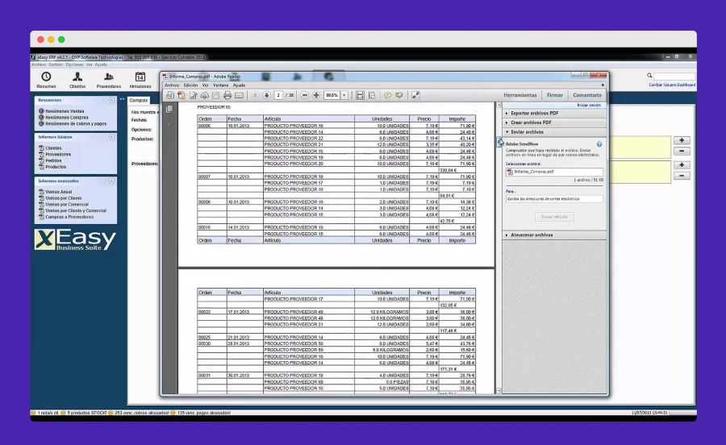
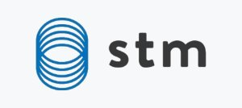
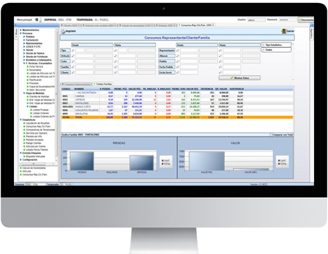
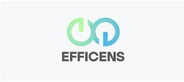
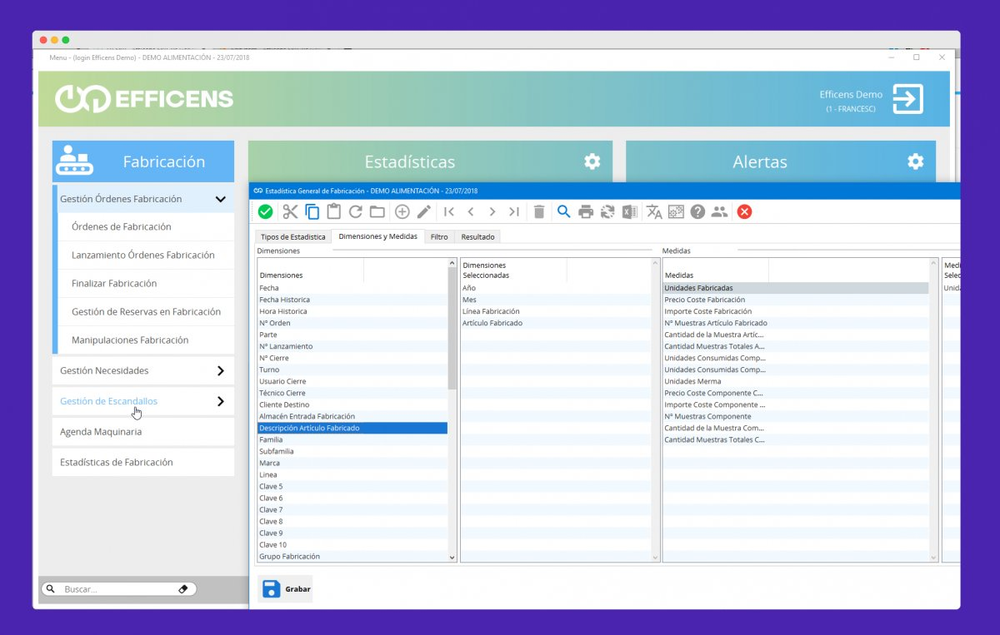
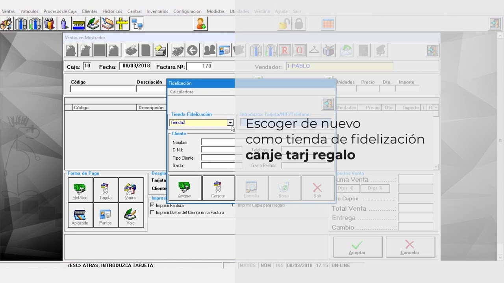
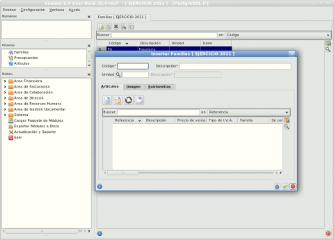

| # | Herramienta | Interfaz | Descripción | Ventajas |
|---|---|---|---|---|
| 1 |
xEasy Business Suite |
 | La suite empresarial OVP "ERP" es un programa de gestión empresarial que permite mejorar la eficiencia de cada departamento de la empresa, reducir costes y obtener un retorno de la inversión en poco tiempo. |
|
| 2 |

STM Textil |
 | STM Textil Software permite a la GESTIÓN COMERCIAL TEXTIL enfocarse en los fabricantes de ropa, empresas que necesitan potentes funcionalidades, potentes herramientas de consulta y alta facilidad de uso, ya que contiene menús muy lógicos y fáciles de entender, aunque su conocimiento implica PC Empty, que es suficiente para que sepa leer para ser coherente con lo que ve |
|
| 3 |
Efficens-Texti |

|
Las herramientas adaptadas al departamento con módulos y funciones específicas, si se utilizan en la industria minorista, tienen opciones de POS. Se basa en una arquitectura modular de última generación basada en herramientas estándar y consta de un conjunto de aplicaciones integradas altamente parametrizables. |
|
| 4 |

Efficens-Textil |
 | El software Efficens ERP está especialmente diseñado y creado para la programación de software comercial. Nuestro objetivo es adaptarnos de forma eficaz y eficiente a las necesidades de la empresa de forma rápida y económica. |
|
| 5 |
WinTextil |
 | El módulo de gestión integrado de una sola tienda puede realizar un procesamiento real y simple del tamaño y el color de los productos. Controla todos los movimientos del almacén de forma ágil y sencilla, encarga pedidos a proveedores, recibe pedidos automáticamente, órdenes de entrega de compras, control de inventarios, estadísticas, inventarios | |
| 6 |
Eneboo ERP |
 | Eneboo ERP / CRM es un software de planificación de recursos empresariales (PRE, ERP) y gestión de relaciones con el cliente (CRM) de código abierto para pymes, autónomos o asociaciones. Es una variante (código libre) del programa AbanQ (y uno de FacturaLux) creado en 2012 |
|